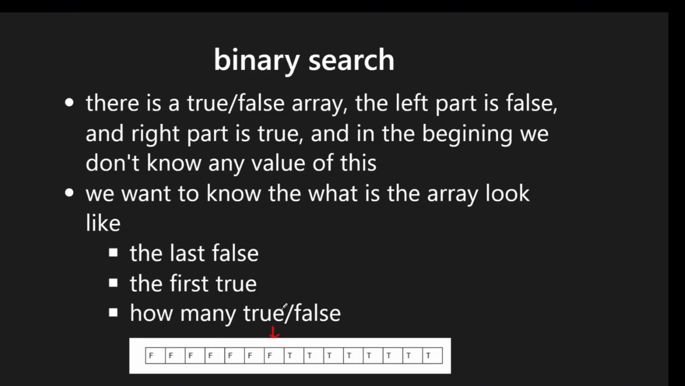

Binary Search
Last updated: Apr 21, 2026Table of Contents
- Overview
- Key Properties
- Core Algorithm Steps
- When to Use Binary Search
- References
- Understanding Binary Search Pointer Behavior
- Core Insight: What Do l and r Actually Mean?
- Summary Table
- Application: Search Insert Position (LC 35)
- Common Mistake to Avoid
- 1) Binary Search Types & Patterns
- 1.1) Basic Binary Search
- 1.2) Search in Rotated Array
- 1.3) Recursive Binary Search
- 1.4) Search in 2D Matrix (LC 74)
- 1.5) Find Boundaries (LC 34)
- 1.6) Left Boundary Search (LC 367, 875)
- 1.7) Right Boundary Search
- 1.8) Binary Search on Answer Space ⭐⭐⭐⭐⭐
- 1.9) Related Algorithms & Data Structures
- 2) Binary Search Templates & Patterns
- Additional Resources
- 2.1) Standard Binary Search Template
- 2.2) Left Boundary Template
- 2.3) Right Boundary Template
- 3) Summary & Quick Reference
- 3.1) When to Use Binary Search
- 3.2) Template Selection Guide
- 3.3) Common Pitfalls & Tips
- 3.4) Time & Space Complexity
- 4) LeetCode Examples & Applications
- 4.1) Search in Rotated Sorted Array (LC 33, LC 81)
- 4.2) Two Sum II - Input Array is Sorted (LC 167)
- 4.3) Find Peak Element (LC 162, LC 852)
- 4.4) Valid Perfect Square (LC 367) & Sqrt(x) (LC 69)
- 4.5) Minimum Size Subarray Sum (LC 209)
- 4.6) First Bad Version (LC 278)
- 4.7) Search Insert Position (LC 35)
- 4.8) Capacity To Ship Packages Within D Days (LC 1011)
- 4.9) Split Array Largest Sum (LC 410) [Hard]
- 4.10) Koko Eating Bananas (LC 875)
- 4.11) Find K Closest Elements (LC 658)
- 4.12) Sqrt(x) (LC 69) - Alternative Implementation
- 4.13) Find First and Last Position of Element in Sorted Array (LC 34)
- 4.14) Search a 2D Matrix (LC 74)
- 4.15) Find Minimum in Rotated Sorted Array (LC 153)
- 4.16) Find First and Last Position - Alternative Implementation
- 4.17) Find Smallest Letter Greater Than Target (LC 744)
- 4.18) Arranging Coins (LC 441)
- 4.19) Minimum Number of Days to Make m Bouquets (LC 1482)
- 4.20) Search a 2D Matrix II (LC 240)
- 4.21) Find Minimum in Rotated Sorted Array II (LC 154)
- 4.22) Missing Element in Sorted Array (LC 1060)
- LC Examples
- 2-1) Find First and Last Position (LC 34) — Left/Right Binary Search
- 2-2) Search in Rotated Sorted Array (LC 33) — Binary Search on Rotated Array
- 2-3) Koko Eating Bananas (LC 875) — Binary Search on Answer
- 2-4) Find Minimum in Rotated Sorted Array (LC 153) — Binary Search
- 2-5) Capacity to Ship Packages Within D Days (LC 1011) — Binary Search on Answer
- 2-6) Find Peak Element (LC 162) — Binary Search on Peak
- 2-7) Split Array Largest Sum (LC 410) — Binary Search on Answer
- 2-8) First Bad Version (LC 278) — Classic Binary Search
- 2-9) Median of Two Sorted Arrays (LC 4) — Binary Search on Partition
- 2-10) Time Based Key-Value Store (LC 981) — Binary Search on Timestamps
- 2-11) Minimum Number of Days to Make m Bouquets (LC 1482) — Binary Search on Days
- 2-12) Single Element in a Sorted Array (LC 540) — Binary Search
- 2-13) Minimize the Maximum Difference of Pairs (LC 2616) — Minimize Maximum Pattern
- 2-14) Divide Chocolate (LC 1231) — Maximize Minimum Pattern
Binary Search
Overview
Binary Search is an efficient algorithm to find a target value in a sorted search space using two pointers.
Key Properties
- Time Complexity: O(log n)
- Space Complexity: O(1) iterative, O(log n) recursive
- Prerequisites: Sorted array OR monotonic property
- Search Space: Not limited to fully sorted arrays - works with:
- Fully sorted arrays
- Partially sorted arrays
- Rotated sorted arrays
- Any space with monotonic properties
Core Algorithm Steps
- Define boundaries: Initialize
leftandrightpointers to include all possible cases - Define return values: Determine what to return (index, value, -1, etc.)
- Define exit condition: Choose appropriate loop condition (
<=,<, or< -1) - Update pointers: Move boundaries based on comparison with target
When to Use Binary Search
- Sorted arrays: Classic use case for finding exact values
- Monotonic functions: If
condition(k)impliescondition(k+1), binary search applies - Search boundaries: Finding first/last occurrence of a value
- Optimization problems: Finding minimum/maximum values satisfying constraints
References
- Frameworks:
- Problem Collections:
- Python Tools:
- Python bisect module - maintains sorted order during insertions

Understanding Binary Search Pointer Behavior
Core Insight: What Do l and r Actually Mean?
This is the fundamental concept that makes binary search work and explains why returning l is correct for insertion position problems like LC 35.
During the Loop: The Search Space Invariant
Throughout the binary search loop while (l <= r):
- Everything left of
lis strictly< target - Everything right of
ris strictly> target - The possible location of
targetis always inside[l, r]
Each iteration removes half the search space while preserving this invariant.
// Standard binary search pattern
while (l <= r) {
int mid = l + (r - l) / 2;
if (nums[mid] == target) {
return mid;
} else if (nums[mid] < target) {
l = mid + 1; // All elements [0..mid] are < target
} else {
r = mid - 1; // All elements [mid..end] are > target
}
}
When the Loop Ends: Pointer Positions
The loop terminates when l > r, which means l == r + 1.
At this exact moment, the array is split into two parts:
Visual Representation:
index: 0 ... r l ... n-1
value: [< target] gap [> target]
Key Properties When Loop Ends:
ris the last element smaller than targetlis the first element greater than or equal to target- There is no index between r and l (since
r = l - 1)
This is why l is the correct insertion position!
Visual Example
Let’s trace through nums = [1, 3, 5, 6], target = 4:
Initial:
l=0, r=3
[1, 3, 5, 6]
l r
Step 1:
mid = 1, nums[1] = 3
3 < 4, so l = mid + 1 = 2
[1, 3, 5, 6]
l r
Step 2:
mid = 2, nums[2] = 5
5 > 4, so r = mid - 1 = 1
[1, 3, 5, 6]
r l
Loop ends (l > r):
- r points to 3 (last element < 4)
- l points to 5 (first element > 4)
- Insertion position is l = 2
Why Return l?
When binary search completes without finding the target:
while (l <= r) {
int mid = l + (r - l) / 2;
if (nums[mid] == target) return mid;
else if (nums[mid] < target) l = mid + 1;
else r = mid - 1;
}
// Target not found
// At this point: l > r, specifically l == r + 1
return l; // Correct insertion position
Guarantee:
nums[0..l-1] < target(by construction during search)nums[l..end] >= target(by construction during search)
So l is either:
- The index where target should be inserted, or
- The index of the leftmost element equal to target
Summary Table
| State | l Position |
r Position |
Meaning |
|---|---|---|---|
| During loop | First unchecked index >= target | Last unchecked index <= target | Search space is [l, r] |
| Loop ends | First element >= target | Last element < target | l is insertion point |
| Visual | ... r | l ... |
No gap between them | l = r + 1 |
Application: Search Insert Position (LC 35)
// LC 35 - The cleanest solution using pointer behavior
public int searchInsert(int[] nums, int target) {
if (nums == null || nums.length == 0) {
return 0;
}
int l = 0;
int r = nums.length - 1;
while (l <= r) {
int mid = l + (r - l) / 2;
if (nums[mid] == target) {
return mid;
} else if (nums[mid] < target) {
l = mid + 1;
} else {
r = mid - 1;
}
}
// Key insight: l is always the correct insertion position
return l;
}
Why this works without special cases:
- If target exists: we return mid during the loop
- If target doesn’t exist:
- Loop ends with
l > r - By invariant:
nums[0..l-1] < targetandnums[l..end] >= target - Therefore
lis exactly where target should be inserted
- Loop ends with
Common Mistake to Avoid
// ❌ WRONG: Trying to handle "between mid and mid+1" during the loop
while (l <= r) {
int mid = l + (r - l) / 2;
if (nums[mid] == target) return mid;
// This is unnecessary and error-prone!
if (mid + 1 <= nums.length - 1 && target < nums[mid+1] && target > nums[mid]) {
return mid + 1;
}
// ...
}
Why this is wrong: Binary search naturally converges to the correct position. Trust the pointer invariant and just return l after the loop.
1) Binary Search Types & Patterns
1.1) Basic Binary Search
- Purpose: Find exact target value in sorted array
- Return: Index of target, or -1 if not found
- Complexity: O(log n)
1.2) Search in Rotated Array
- Key Concept: Determine which half is sorted, then decide search direction
- Applications: Find target, find minimum element
Find Minimum in Rotated Sorted Array (LC 153)
// Approach: Compare mid with boundaries to determine rotation point
while (r >= l) {
int mid = (l + r) / 2;
// Case 1: left subarray + mid is ascending -> search right
if (nums[mid] >= nums[l]) {
l = mid + 1;
}
// Case 2: right subarray + mid is ascending -> search left
else {
r = mid - 1;
}
}
// Two-step approach: determine sorted half, then check target location
while (r >= l) {
int mid = (l + r) / 2;
if (nums[mid] == target) {
return mid;
}
// Case 1: Left half is sorted (compare mid with left boundary)
if (nums[mid] >= nums[l]) {
// Check if target is in the sorted left half
if (target >= nums[l] && target < nums[mid]) {
r = mid - 1; // Search left half
} else {
l = mid + 1; // Search right half
}
}
// Case 2: Right half is sorted
else {
// Check if target is in the sorted right half
if (target <= nums[r] && target > nums[mid]) {
l = mid + 1; // Search right half
} else {
r = mid - 1; // Search left half
}
}
}
Key Differences:
- LC 153 (Find Min): Only needs to determine which side to search
- LC 33/81 (Find Target): Must check target location within sorted half
1.3) Recursive Binary Search
- Use Cases: When recursive approach is more intuitive
- Space: O(log n) due to call stack
1.4) Search in 2D Matrix (LC 74)
- Approach 1: Flatten matrix using
row = idx / cols,col = idx % cols - Approach 2: Row-by-row binary search
- Time: O(log(m×n))
1.5) Find Boundaries (LC 34)
Purpose: Find first and last occurrence of target
// Template for finding boundaries
while (r >= l) {
int mid = (l + r) / 2;
if (nums[mid] == target) {
// Key: Don't return immediately, continue searching
if (findFirst) {
r = mid - 1; // Shrink right boundary to find leftmost
} else {
l = mid + 1; // Shrink left boundary to find rightmost
}
} else if (nums[mid] < target) {
l = mid + 1;
} else {
r = mid - 1;
}
}
// Post-processing needed to validate result
1.6) Left Boundary Search (LC 367, 875)
Purpose: Find the leftmost occurrence of target
def find_left_boundary(nums, target):
l, r = 0, len(nums) - 1
while l <= r:
mid = l + (r - l) // 2
if nums[mid] < target:
l = mid + 1
elif nums[mid] > target:
r = mid - 1
else: # nums[mid] == target
r = mid - 1 # Keep searching left
# Validate result
if l >= len(nums) or nums[l] != target:
return -1
return l
// Generic left boundary template
while (r >= l) {
int mid = (l + r) / 2;
if (condition(mid)) {
r = mid - 1; // Found valid, search for better (smaller) solution
} else {
l = mid + 1; // Not valid, search larger values
}
}
// Result is typically at index 'l'
1.7) Right Boundary Search
Purpose: Find the rightmost occurrence of target
def find_right_boundary(nums, target):
l, r = 0, len(nums) - 1
while l <= r:
mid = l + (r - l) // 2
if nums[mid] < target:
l = mid + 1
elif nums[mid] > target:
r = mid - 1
else: # nums[mid] == target
l = mid + 1 # Keep searching right
# Validate result
if r < 0 or nums[r] != target:
return -1
return r
1.8) Binary Search on Answer Space ⭐⭐⭐⭐⭐
Critical Pattern - One of the most important and frequently tested binary search applications in FAANG interviews.
Concept
Instead of searching for a value IN an array, we binary search on a range of possible answers and use a validation function to check feasibility.
When to Use:
- “Find minimum/maximum value that satisfies…”
- “What’s the smallest/largest X such that…”
- “Can we achieve X? What’s the optimal X?”
- Problem has monotonic property: if X works, then X+1 (or X-1) also works
Key Recognition Keywords:
- “Minimize the maximum…”
- “Maximize the minimum…”
- “Find the smallest capacity/speed/divisor…”
- “Can you split/allocate/distribute…”
Common Problem Patterns:
- LC 410: Split Array Largest Sum
- LC 1011: Capacity To Ship Packages Within D Days
- LC 875: Koko Eating Bananas
- LC 1283: Find the Smallest Divisor
- LC 1482: Minimum Number of Days to Make m Bouquets
- LC 2226: Maximum Candies Allocated to K Children
Template Pattern
Structure:
- Define search space: [min_possible, max_possible]
- Binary search on this range
- Validation function: Check if current value satisfies constraints
- Update boundaries based on minimization/maximization goal
// Unified Template for Binary Search on Answer Space
public int binarySearchOnAnswer(int[] arr, int target) {
// Step 1: Define search space boundaries
int left = 1; // Minimum possible answer
int right = Integer.MAX_VALUE; // Maximum possible answer (or sum, max element, etc.)
// Step 2: Binary search on the answer space
while (left < right) { // or left <= right depending on problem
int mid = left + (right - left) / 2;
// Step 3: Check if 'mid' is a valid answer using validation function
if (isValid(arr, mid, target)) {
// If minimizing: valid answer found, try smaller
right = mid;
// If maximizing: valid answer found, try larger
// left = mid + 1;
} else {
// If minimizing: mid is too small, try larger
left = mid + 1;
// If maximizing: mid is too large, try smaller
// right = mid - 1;
}
}
return left; // or right, they converge to the same value
}
// Step 4: Validation function - checks if 'value' satisfies constraints
private boolean isValid(int[] arr, int value, int target) {
// Problem-specific logic to check feasibility
// Example: Can we split array into at most K subarrays with max sum <= value?
// Returns true if 'value' is valid, false otherwise
return true; // placeholder
}
Decision Matrix: Minimize vs Maximize ⭐⭐⭐⭐⭐
| Goal | Example Problems | Valid Condition | Update Rule | Final Answer |
|---|---|---|---|---|
| Minimize maximum | LC 410, 1011, 2616 | If mid works | right = mid (try smaller) |
left (smallest valid) |
| Maximize minimum | LC 1231, 1552, 2226 | If mid works | left = mid + 1 (try larger) |
left - 1 or ans variable |
Mnemonic:
- Minimize: When valid, go left (smaller values) → Find smallest working value
- Maximize: When valid, go right (larger values) → Find largest working value
Critical Template Difference:
// MINIMIZE pattern (LC 410, 1011)
while (left < right) {
int mid = left + (right - left) / 2; // Standard mid
if (isValid(mid)) right = mid; // Try smaller
else left = mid + 1;
}
return left;
// MAXIMIZE pattern (LC 1231, 1552)
while (left < right) {
int mid = left + (right - left + 1) / 2; // CRITICAL: +1 to avoid infinite loop!
if (isValid(mid)) left = mid; // Try larger
else right = mid - 1;
}
return left;
Example 1: LC 410 - Split Array Largest Sum ⭐⭐⭐⭐⭐
Problem: Split array into m subarrays, minimize the largest sum among subarrays.
Insight: Binary search on possible “largest sum” values. For each mid, check if we can split array into ≤ m subarrays with each sum ≤ mid.
// LC 410 - Split Array Largest Sum
class Solution {
/**
* time = O(N × log(sum))
* space = O(1)
*
* Approach: Binary search on answer space [max_element, total_sum]
*/
public int splitArray(int[] nums, int k) {
// Step 1: Define search space
int left = 0; // Minimum: largest single element
int right = 0; // Maximum: sum of all elements
for (int num : nums) {
left = Math.max(left, num); // Must fit largest element
right += num; // Upper bound is total sum
}
// Step 2: Binary search on possible "largest subarray sum"
while (left < right) {
int mid = left + (right - left) / 2;
// Step 3: Check if we can split into ≤ k subarrays with max sum = mid
if (canSplit(nums, k, mid)) {
// Valid! Try smaller max sum (minimize)
right = mid;
} else {
// Can't split with this sum, need larger max sum
left = mid + 1;
}
}
return left; // Smallest valid maximum subarray sum
}
// Validation: Can we split array into at most k subarrays with max sum <= maxSum?
private boolean canSplit(int[] nums, int k, int maxSum) {
int subarrayCount = 1; // Start with 1 subarray
int currentSum = 0;
for (int num : nums) {
// Try to add num to current subarray
if (currentSum + num <= maxSum) {
currentSum += num;
} else {
// Start new subarray
subarrayCount++;
currentSum = num;
// Early termination: too many subarrays needed
if (subarrayCount > k) {
return false;
}
}
}
return true; // Successfully split into ≤ k subarrays
}
}
# Python - LC 410
def splitArray(nums, k):
"""
Time: O(n × log(sum))
Space: O(1)
"""
def can_split(max_sum):
"""Check if we can split into <= k subarrays with max sum <= max_sum"""
subarray_count = 1
current_sum = 0
for num in nums:
if current_sum + num <= max_sum:
current_sum += num
else:
subarray_count += 1
current_sum = num
if subarray_count > k:
return False
return True
# Binary search on answer space
left = max(nums) # Min: largest element
right = sum(nums) # Max: total sum
while left < right:
mid = left + (right - left) // 2
if can_split(mid):
right = mid # Try smaller (minimize)
else:
left = mid + 1
return left
Step-by-Step Trace: nums = [7,2,5,10,8], k = 2
Search space: [10, 32] (max element to sum)
Iteration 1: mid = 21
Can split into [[7,2,5], [10,8]]? Sum = [14, 18] ≤ 21 ✓
Valid! Try smaller: right = 21
Iteration 2: mid = 15
Can split [[7,2,5], [10,8]]? Sum = [14, 18] ≤ 15 ✗ (18 > 15)
Invalid! Need larger: left = 16
Iteration 3: mid = 18
Can split [[7,2], [5,10], [8]]? Need 3 subarrays ✗ (k=2)
Can split [[7,2,5], [10,8]]? Sum = [14, 18] ≤ 18 ✓
Valid! Try smaller: right = 18
left = 16, right = 18
Iteration 4: mid = 17
Can split? Need to check...
Final: left = 18 (minimum largest sum)
Example 2: LC 1011 - Capacity To Ship Packages
Problem: Ship packages within D days. Find minimum capacity needed.
// LC 1011 - Capacity To Ship Packages Within D Days
class Solution {
/**
* time = O(N × log(sum))
* space = O(1)
*/
public int shipWithinDays(int[] weights, int days) {
// Search space: [max_weight, sum_of_weights]
int left = 0, right = 0;
for (int weight : weights) {
left = Math.max(left, weight); // Must hold largest package
right += weight; // Upper bound
}
while (left < right) {
int mid = left + (right - left) / 2;
// Can we ship all packages within D days with capacity = mid?
if (canShip(weights, days, mid)) {
right = mid; // Try smaller capacity (minimize)
} else {
left = mid + 1;
}
}
return left;
}
// Check if we can ship within D days with given capacity
private boolean canShip(int[] weights, int days, int capacity) {
int daysNeeded = 1;
int currentLoad = 0;
for (int weight : weights) {
if (currentLoad + weight <= capacity) {
currentLoad += weight;
} else {
daysNeeded++;
currentLoad = weight;
if (daysNeeded > days) {
return false;
}
}
}
return true;
}
}
Example 3: LC 875 - Koko Eating Bananas
Problem: Koko must eat all bananas within h hours. Find minimum eating speed.
# LC 875 - Koko Eating Bananas
def minEatingSpeed(piles, h):
"""
Time: O(n × log(max_pile))
Space: O(1)
"""
import math
def can_finish(speed):
"""Check if Koko can finish with this speed"""
hours_needed = sum(math.ceil(pile / speed) for pile in piles)
return hours_needed <= h
# Binary search on speed [1, max(piles)]
left, right = 1, max(piles)
while left < right:
mid = left + (right - left) // 2
if can_finish(mid):
right = mid # Try slower speed (minimize)
else:
left = mid + 1 # Need faster speed
return left
Example 4: LC 1283 - Find the Smallest Divisor
Problem: Find smallest divisor such that sum(ceil(num/divisor)) ≤ threshold.
// LC 1283 - Find the Smallest Divisor
class Solution {
/**
* time = O(N × log(max_num))
* space = O(1)
*/
public int smallestDivisor(int[] nums, int threshold) {
int left = 1;
int right = 0;
for (int num : nums) {
right = Math.max(right, num);
}
while (left < right) {
int mid = left + (right - left) / 2;
if (getDivisionSum(nums, mid) <= threshold) {
right = mid; // Valid, try smaller divisor (minimize)
} else {
left = mid + 1; // Sum too large, need larger divisor
}
}
return left;
}
private int getDivisionSum(int[] nums, int divisor) {
int sum = 0;
for (int num : nums) {
sum += (num + divisor - 1) / divisor; // Ceiling division
}
return sum;
}
}
Example 5: LC 1231 - Divide Chocolate (Maximize Minimum) ⭐⭐⭐⭐⭐
Problem: Divide chocolate bar into K+1 pieces (sharing with K friends). You eat the piece with minimum sweetness. Maximize that minimum sweetness.
Key Insight: This is a “Maximize Minimum” problem - the counterpart to “Minimize Maximum”:
- Binary search on the “minimum sweetness” you can get
- Greedy validation: Can we cut into ≥ K+1 pieces where each piece has sweetness ≥ mid?
- If valid → try larger minimum (go right)
- If invalid → need smaller target (go left)
Why Greedy Works:
- Greedily accumulate sweetness until reaching target, then cut
- This maximizes the number of valid pieces for a given target
- Monotonic property: if minSweetness X works, X-1 also works (easier to split)
// LC 1231 - Divide Chocolate
class Solution {
/**
* time = O(N × log(sum))
* space = O(1)
*
* Approach: Binary search on answer space [1, sum/totalPeople]
* Pattern: MAXIMIZE MINIMUM
*/
public int maximizeSweetness(int[] sweetness, int k) {
int totalPeople = k + 1; // K friends + yourself
// Step 1: Define search space
int left = 1; // Minimum possible sweetness
int right = 0;
for (int s : sweetness) right += s;
right /= totalPeople; // Upper bound: average sweetness
int ans = 0;
// Step 2: Binary search on "minimum sweetness you can get"
while (left <= right) {
int mid = left + (right - left) / 2;
// Step 3: Check if we can make at least totalPeople pieces
// where each piece has at least 'mid' sweetness
if (canSplit(sweetness, totalPeople, mid)) {
ans = mid; // Valid! This could be our answer
left = mid + 1; // Try larger minimum (MAXIMIZE)
} else {
right = mid - 1; // Can't split, need smaller target
}
}
return ans;
}
// Validation: Can we make at least 'totalPeople' pieces with each >= minTarget?
private boolean canSplit(int[] sweetness, int totalPeople, int minTarget) {
int currentSweetness = 0;
int pieces = 0;
for (int s : sweetness) {
currentSweetness += s;
// When current piece reaches target, cut it
if (currentSweetness >= minTarget) {
pieces++;
currentSweetness = 0;
}
}
return pieces >= totalPeople; // Can we make enough pieces?
}
}
Alternative Template (while l < r):
public int maximizeSweetness(int[] sweetness, int k) {
int left = 1;
int right = 0;
for (int s : sweetness) right += s;
// Binary search with half-open interval
while (left < right) {
// CRITICAL: Use (l + r + 1) / 2 for maximize problems to avoid infinite loop
int mid = left + (right - left + 1) / 2;
if (canSplit(sweetness, k + 1, mid)) {
left = mid; // Valid → try larger (maximize)
} else {
right = mid - 1; // Invalid → reduce target
}
}
return left;
}
Step-by-Step Trace: sweetness = [1,2,3,4,5,6,7,8,9], k = 5
Total people = 6, Sum = 45
Search space: [1, 7] (1 to 45/6)
Iteration 1: mid = 4
Pieces with sweetness >= 4:
[1,2,3]=6 ✓, [4]=4 ✓, [5]=5 ✓, [6]=6 ✓, [7]=7 ✓, [8]=8 ✓, [9]=9 ✓
Actually: [1,2,3]=6, [4,5]=9... need to re-trace
Greedy: 1+2+3=6≥4 ✓, 4≥4 ✓, 5≥4 ✓, 6≥4 ✓, 7≥4 ✓, 8≥4 ✓
Pieces = 6 ≥ 6 ✓
Valid! Try larger: left = 5
Iteration 2: mid = 6
Greedy: 1+2+3=6≥6 ✓, 4+5=9≥6 ✓, 6≥6 ✓, 7≥6 ✓, 8≥6 ✓, 9≥6 ✓
Pieces = 6 ≥ 6 ✓
Valid! Try larger: left = 7
Iteration 3: mid = 7
Greedy: 1+2+3+4=10≥7 ✓, 5+6=11≥7 ✓, 7≥7 ✓, 8≥7 ✓, 9≥7 ✓
Pieces = 5 < 6 ✗
Invalid! Reduce: right = 6
Final: left = 7 > right = 6, return ans = 6
Similar Problems (Maximize Minimum Pattern):
| Problem | Description | Validation Logic |
|---|---|---|
| LC 1231 | Divide Chocolate | Can split into K+1 pieces with each ≥ target |
| LC 1552 | Magnetic Force | Can place m balls with min distance ≥ target |
| LC 2226 | Maximum Candies | Can give k children candies with each ≥ target |
| LC 2064 | Minimized Maximum Products | Distribute products to stores |
Example 6: LC 2616 - Minimize the Maximum Difference of Pairs ⭐⭐⭐⭐⭐
Problem: Find p pairs of indices such that the maximum difference amongst all pairs is minimized. Each index can only be used once.
Key Insight: This is a classic “Minimize the Maximum” problem:
- Sort the array so closest numbers are adjacent
- Binary search on the “maximum difference” value
- Greedy check: Can we find ≥ p pairs where each pair’s diff ≤ mid?
Why Greedy Works (but PQ Doesn’t):
- After sorting, adjacent pairs give minimum differences
- Greedy pairing rule:
if (nums[i+1] - nums[i] <= maxDiff) → take pair, skip i+1 - This guarantees maximum number of pairs for that maxDiff
- PQ approach fails because it’s a matching optimization problem where local greedy selection doesn’t guarantee optimality
- Binary search has monotonic property: if maxDiff X works, any larger diff also works
// LC 2616 - Minimize the Maximum Difference of Pairs
class Solution {
/**
* time = O(N log N + N log(max-min))
* space = O(1)
*
* Approach:
* 1. Sort array → adjacent elements have minimum differences
* 2. Binary search on answer space [0, max_diff]
* 3. Greedy validation: count pairs with diff <= mid
*/
public int minimizeMax(int[] nums, int p) {
if (p == 0) return 0;
// Step 1: Sort to make closest numbers adjacent
Arrays.sort(nums);
int n = nums.length;
// Search space: [0, max_difference]
int left = 0;
int right = nums[n - 1] - nums[0];
// Step 2: Binary search on possible "maximum difference"
while (left < right) {
int mid = left + (right - left) / 2;
// Step 3: Check if we can form at least p pairs with diff <= mid
if (canFormPairs(nums, p, mid)) {
right = mid; // Valid! Try smaller max diff (minimize)
} else {
left = mid + 1; // Can't form enough pairs, need larger diff
}
}
return left;
}
// Greedy validation: count maximum pairs with diff <= maxDiff
private boolean canFormPairs(int[] nums, int p, int maxDiff) {
int count = 0;
for (int i = 0; i < nums.length - 1; i++) {
// If adjacent pair fits constraint, take it!
if (nums[i + 1] - nums[i] <= maxDiff) {
count++;
i++; // CRITICAL: Skip next index (element can only be in one pair)
}
if (count >= p) return true; // Early termination
}
return count >= p;
}
}
Step-by-Step Trace: nums = [10,1,2,7,1,3], p = 2
After sorting: [1, 1, 2, 3, 7, 10]
Adjacent diffs: [0, 1, 1, 4, 3]
Search space: [0, 9] (min diff to max diff)
Iteration 1: mid = 4
Pairs with diff ≤ 4: (1,1)=0 ✓, skip, (2,3)=1 ✓ → 2 pairs
Valid! Try smaller: right = 4
Iteration 2: mid = 2
Pairs with diff ≤ 2: (1,1)=0 ✓, skip, (2,3)=1 ✓ → 2 pairs
Valid! Try smaller: right = 2
Iteration 3: mid = 1
Pairs with diff ≤ 1: (1,1)=0 ✓, skip, (2,3)=1 ✓ → 2 pairs
Valid! Try smaller: right = 1
Final: left = 1 (minimum maximum difference)
Why PQ Approach Fails - Counterexample:
nums = [1, 3, 4, 6, 7, 20], p = 2
Sorted diffs: (3,4)=1, (6,7)=1, (1,3)=2, (4,6)=2, (7,20)=13
PQ picks smallest first:
1. (3,4)=1 → use 3,4
2. (6,7)=1 → use 6,7
Result: max = 1 ✓ (happens to be correct here)
But in general, PQ may pick overlapping or suboptimal pairs.
Binary search guarantees correctness via monotonic property.
Why Binary Search Works for “Minimize the Maximum” ⭐⭐⭐⭐⭐
This is the theoretical foundation that makes binary search applicable to optimization problems.
The Monotonic Property (Key Insight)
Binary search requires a monotonic (sorted) property. For “Minimize the Maximum” problems, this property exists in the feasibility function:
If we can achieve the goal with maximum value = X,
then we can ALWAYS achieve it with maximum value = X + 1 (or any larger value).
This creates a monotonic feasibility curve:
Answer Space: 0 1 2 3 4 5 6 7 8 9 ...
|---|---|---|---|---|---|---|---|---|---|
Feasible? ✗ ✗ ✗ ✗ ✓ ✓ ✓ ✓ ✓ ✓ ...
↑
Decision Boundary (Answer = 4)
The feasibility function is monotonic:
- All values LEFT of boundary: INFEASIBLE (✗)
- All values RIGHT of boundary: FEASIBLE (✓)
- We want to find the LEFTMOST ✓ (minimum feasible value)
Why This Enables Binary Search
Standard binary search finds a target in a sorted array. Binary search on answer finds the boundary in a sorted feasibility function.
| Concept | Standard Binary Search | Binary Search on Answer |
|---|---|---|
| Search space | Sorted array of values | Range of possible answers |
| Monotonic property | Values are sorted | Feasibility is monotonic |
| Goal | Find exact target | Find boundary (first ✓) |
| Check | nums[mid] == target? |
isValid(mid)? |
Mathematical Proof
Theorem: If isValid(x) has the monotonic property:
isValid(x) = true⟹isValid(x + 1) = true
Then binary search correctly finds the minimum valid x.
Proof:
- The answer space
[left, right]can be partitioned into:[left, answer-1]: all invalid[answer, right]: all valid
- Binary search finds this partition point in O(log n) time
- Each iteration halves the search space while preserving the invariant
Visual Example: LC 2616
Problem: Find p=2 pairs with minimum maximum difference
Array after sorting: [1, 1, 2, 3, 7, 10]
Answer space (max diff): 0 1 2 3 4 5 6 7 8 9
Can form 2 pairs? ✗ ✓ ✓ ✓ ✓ ✓ ✓ ✓ ✓ ✓
↑
Answer = 1 (minimum max diff)
Why monotonic?
- If max_diff = 1 works: pairs (1,1)=0, (2,3)=1 → both ≤ 1 ✓
- If max_diff = 2 works: same pairs still work, more options available ✓
- If max_diff = 0 fails: only (1,1)=0 works, can't form 2 pairs ✗
Larger max_diff → More pairs possible → Easier to satisfy constraint
Why Not Just Iterate? (Complexity Analysis)
| Approach | Time Complexity | Explanation |
|---|---|---|
| Linear search | O(range × n) | Check every possible answer |
| Binary search | O(log(range) × n) | Halve search space each time |
For LC 2616: range = 10⁹, n = 10⁵
- Linear: 10⁹ × 10⁵ = 10¹⁴ operations ❌ TLE
- Binary: log(10⁹) × 10⁵ ≈ 30 × 10⁵ = 3×10⁶ operations ✓
The Three Requirements for Binary Search on Answer
✅ Requirement 1: BOUNDED answer space
- Must have clear [min, max] range
- Example: [0, max_element - min_element]
✅ Requirement 2: MONOTONIC feasibility
- If X works, X+1 must also work (for minimize)
- If X works, X-1 must also work (for maximize)
✅ Requirement 3: EFFICIENT validation
- Can check if answer X is valid in O(n) or O(n log n)
- Usually uses greedy approach
Common “Minimize Maximum” Problem Structure
public int minimizeMaximum(int[] arr, int constraint) {
// Step 1: Define bounded search space
int left = minPossibleAnswer; // Often 0 or min(arr)
int right = maxPossibleAnswer; // Often sum(arr) or max(arr)
// Step 2: Binary search using monotonic property
while (left < right) {
int mid = left + (right - left) / 2;
// Step 3: Check feasibility (must be O(n) or O(n log n))
if (isValid(arr, constraint, mid)) {
right = mid; // Valid → try smaller (minimize)
} else {
left = mid + 1; // Invalid → need larger
}
}
return left; // Leftmost valid answer
}
// Validation function - the KEY to correctness
// Must return true for all values >= optimal answer
private boolean isValid(int[] arr, int constraint, int maxAllowed) {
// Greedy check: can we satisfy constraint with this maxAllowed?
// This is problem-specific
}
Common Patterns & Tricks
Pattern 1: Minimize Maximum ⭐⭐⭐
- Goal: Find smallest X where some maximum value ≤ X
- Update:
if valid: right = mid(try smaller) - Examples: LC 410, 1011, 1482, 2616
- Key: Sort first (if applicable) + greedy validation
- Why BS works: Monotonic property — larger X is always easier to satisfy
Pattern 2: Maximize Minimum ⭐⭐⭐
- Goal: Find largest X where some minimum value ≥ X
- Update:
if valid: left = mid + 1(try larger), usemid = (l + r + 1) / 2 - Examples: LC 1231 (Divide Chocolate), LC 1552, LC 2064, LC 2226
- Key: Greedy validation — can we make enough pieces/groups with each ≥ target?
- Why BS works: Monotonic property — smaller X is always easier to satisfy
- Counterpart to LC 410: LC 1231 is “maximize min sweetness” vs LC 410 “minimize max sum”
Pattern 3: Count-Based Validation
- Check: “Can we do it in at most K groups/days/operations?”
- Greedy approach: Try to fit as much as possible in each group
- Examples: LC 410 (subarrays), LC 1011 (days)
Pattern 4: Sum-Based Validation
- Check: “Is the sum/total within bounds?”
- Accumulate values and check threshold
- Examples: LC 1283 (division sum), LC 875 (hours)
Template Variations
Variation 1: Closed Interval [left, right]
while (left <= right) {
int mid = left + (right - left) / 2;
if (isValid(mid)) {
result = mid; // Store potential answer
right = mid - 1; // Try to minimize
} else {
left = mid + 1;
}
}
return result;
Variation 2: Half-Open Interval [left, right)
while (left < right) {
int mid = left + (right - left) / 2;
if (isValid(mid)) {
right = mid; // Keep mid in range
} else {
left = mid + 1;
}
}
return left; // left == right
Interview Tips
How to Recognize:
- Problem asks for “minimum/maximum” value
- You can easily check “is X valid?” but not “what is the optimal X?”
- Answer has monotonic property (if X works, X+1 or X-1 also works)
Common Mistakes:
-
Wrong search space bounds
- Too narrow: Missing the optimal answer
- Solution: Carefully analyze minimum (e.g., max element) and maximum (e.g., sum)
-
Off-by-one in validation
// ❌ WRONG: Using < instead of <= if (currentSum + num < maxSum) {...} // ✅ CORRECT: Must allow equality if (currentSum + num <= maxSum) {...} -
Wrong boundary update
- Minimize:
right = mid(notmid - 1) - Maximize:
left = mid + 1
- Minimize:
-
Inefficient validation
- Add early termination in validation function
- Use greedy approach for O(n) validation
Talking Points:
- “This is a binary search on answer space problem”
- “I’ll binary search on [min, max] and use a helper to validate”
- “The answer has monotonic property: if X works, larger X also works”
- “Time complexity: O(n × log(range)) where n is validation cost”
Related Problems (Sorted by Difficulty)
| Problem | Difficulty | Pattern | Key Insight |
|---|---|---|---|
| LC 69 | Easy | Integer square root | Search on [0, x] |
| LC 875 | Medium | Minimize speed | Eating bananas, greedy validation |
| LC 1011 | Medium | Minimize capacity | Ship packages, similar to LC 410 |
| LC 1231 | Hard | Maximize minimum | Divide chocolate, greedy cut when sum ≥ target |
| LC 1283 | Medium | Minimize divisor | Ceiling division, sum constraint |
| LC 1482 | Medium | Minimize days | Make bouquets, range validation |
| LC 1552 | Medium | Maximize minimum | Magnetic force, aggressive cows |
| LC 2226 | Medium | Maximize candies | Per-child allocation |
| LC 2616 | Medium | Minimize max diff | Sort + greedy pairing, skip used |
| LC 410 | Hard | Minimize maximum | Split array, subarray sum |
| LC 2064 | Medium | Minimize max | Distribute products to stores |
Practice Progression:
- Start with LC 875 (clearest example of minimize pattern)
- Then LC 1011 (similar to 410 but easier)
- Master LC 410 (classic minimize maximum, frequently asked)
- Try LC 1231 (maximize minimum - counterpart to LC 410)
- Try LC 2616 (minimize max with pairing constraint)
- Explore LC 1283, 1482 (variations)
- Challenge: LC 1552, 2064, 2226 (maximize minimum pattern)
1.9) Related Algorithms & Data Structures
Complementary Algorithms:
- Two Pointers: For sorted arrays without random access
- Sliding Window: For subarray problems with certain properties
- Recursion: Alternative implementation approach
Data Structures:
- Arrays: Primary use case for binary search
- Binary Search Trees: Implicit binary search in tree traversal
- Hash Tables: O(1) lookup alternative when sorting not required
2) Binary Search Templates & Patterns
Additional Resources
0-2-0) Loop Exit Conditions Comparison
Key Difference: The exit condition determines when the loop terminates and affects boundary handling.
| Condition | Boundary Type | When to Use | Key Characteristics |
|---|---|---|---|
while (l <= r) |
Closed [l, r] | Standard binary search | • Most common approach • Search space includes both l and r • Need l = mid + 1, r = mid - 1 |
while (l < r) |
Half-open [l, r) | Finding boundaries/insertion points | • Search space excludes r • Loop ends when l == r• Use l = mid + 1, r = mid |
while (l < r - 1) |
Gap-based | Avoiding infinite loops in special cases | • Ensures l and r are never adjacent • Requires final check after loop • Less common, used for complex conditions |
Detailed Analysis:
// 1) while (l <= r) - CLOSED BOUNDARY [l, r]
while (l <= r) {
int mid = l + (r - l) / 2;
if (nums[mid] == target) return mid;
else if (nums[mid] < target) l = mid + 1; // MUST +1
else r = mid - 1; // MUST -1
}
// Pros: Standard, easy to understand
// Cons: Can return -1 if not found
// 2) while (l < r) - HALF-OPEN [l, r)
while (l < r) {
int mid = l + (r - l) / 2;
if (nums[mid] < target) l = mid + 1; // +1 to exclude mid
else r = mid; // NO -1, keep mid in range
}
// After loop: l == r, points to answer or insertion point
// Pros: Great for finding boundaries, no -1 return
// Cons: Requires different logic for different problems
// 3) while (l < r - 1) - GAP-BASED
while (l < r - 1) {
int mid = l + (r - l) / 2;
if (condition(mid)) l = mid;
else r = mid;
}
// Final check needed: examine both l and r
// Pros: Avoids infinite loops in complex conditions
// Cons: More complex, requires post-processing
When to Use Each:
while (l <= r): Classic binary search, finding exact valueswhile (l < r): Finding first/last occurrence, insertion position, peak findingwhile (l < r - 1): Complex conditions where mid might equal l or r
Classic LeetCode Problems by Pattern
Pattern 1: while (l <= r) - Exact Search
- LC 704: Binary Search (basic implementation)
- LC 33: Search in Rotated Sorted Array
- LC 81: Search in Rotated Sorted Array II
- LC 74: Search a 2D Matrix
- LC 240: Search a 2D Matrix II
- LC 69: Sqrt(x)
- LC 367: Valid Perfect Square
- LC 441: Arranging Coins
Pattern 2: while (l < r) - Boundary/Peak Finding
- LC 34: Find First and Last Position of Element
- LC 35: Search Insert Position
- LC 162: Find Peak Element
- LC 852: Peak Index in a Mountain Array
- LC 153: Find Minimum in Rotated Sorted Array
- LC 154: Find Minimum in Rotated Sorted Array II
- LC 278: First Bad Version
- LC 658: Find K Closest Elements
- LC 744: Find Smallest Letter Greater Than Target
Pattern 3: while (l < r - 1) - Complex Conditions
- LC 410: Split Array Largest Sum (with validation function)
- LC 875: Koko Eating Bananas (with time calculation)
- LC 1011: Capacity To Ship Packages Within D Days
- LC 1060: Missing Element in Sorted Array
- LC 1482: Minimum Number of Days to Make m Bouquets
2.1) Standard Binary Search Template
Key Principles:
- Initialization:
left = 0, right = nums.length - 1(closed interval) - Loop Condition:
while (left <= right) - Pointer Updates:
left = mid + 1,right = mid - 1 - Clarity Tip: Use
else iffor all conditions to make logic explicit
Programming Tip: Avoid using
else- write all conditions aselse ifto clearly show all cases and avoid bugs.
// Java Implementation
public int binarySearch(int[] nums, int target) {
int left = 0;
int right = nums.length - 1;
// Use <= to search when left == right
while (left <= right) {
int mid = left + (right - left) / 2; // Avoid overflow
if (nums[mid] == target) {
return mid;
} else if (nums[mid] < target) {
left = mid + 1; // Target in right half
} else { // nums[mid] > target
right = mid - 1; // Target in left half
}
}
return -1; // Not found
}
# Python Implementation
def binary_search(nums, target):
left, right = 0, len(nums) - 1
# Closed boundary [left, right] - includes both endpoints
while left <= right:
mid = left + (right - left) // 2 # Avoid overflow
if nums[mid] == target:
return mid
elif nums[mid] < target:
left = mid + 1 # Search right half
else:
right = mid - 1 # Search left half
return -1 # Target not found
2.2) Left Boundary Template
Use Cases: Find leftmost occurrence, insertion point, first valid solution
/**
* Key Differences from Standard Binary Search:
* 1. When nums[mid] == target: shrink RIGHT boundary (right = mid - 1)
* 2. Post-processing: validate the result before returning
*/
public int findLeftBoundary(int[] nums, int target) {
int left = 0;
int right = nums.length - 1;
while (left <= right) {
int mid = left + (right - left) / 2;
if (nums[mid] < target) {
left = mid + 1;
} else if (nums[mid] > target) {
right = mid - 1;
} else { // nums[mid] == target
// DON'T return! Continue searching for leftmost occurrence
right = mid - 1; // Shrink right boundary
}
}
// Validate result - check bounds and target match
if (left >= nums.length || nums[left] != target) {
return -1;
}
return left;
}
# Python Left Boundary Implementation
def find_left_boundary(nums, target):
left, right = 0, len(nums) - 1
while left <= right:
mid = left + (right - left) // 2
if nums[mid] < target:
left = mid + 1
elif nums[mid] > target:
right = mid - 1
else: # nums[mid] == target
# Continue searching left for first occurrence
right = mid - 1
# Validate: check if left is within bounds and points to target
if left >= len(nums) or nums[left] != target:
return -1
return left
2.3) Right Boundary Template
Use Cases: Find rightmost occurrence, last valid solution
/**
* Key Differences from Standard Binary Search:
* 1. When nums[mid] == target: shrink LEFT boundary (left = mid + 1)
* 2. Return left - 1 after validation
*/
public int findRightBoundary(int[] nums, int target) {
int left = 0;
int right = nums.length - 1;
while (left <= right) {
int mid = left + (right - left) / 2;
if (nums[mid] < target) {
left = mid + 1;
} else if (nums[mid] > target) {
right = mid - 1;
} else { // nums[mid] == target
// DON'T return! Continue searching for rightmost occurrence
left = mid + 1; // Shrink left boundary
}
}
// Validate result - return left - 1
if (right < 0 || nums[right] != target) {
return -1;
}
return right;
}
# Python Right Boundary Implementation
def find_right_boundary(nums, target):
left, right = 0, len(nums) - 1
while left <= right:
mid = left + (right - left) // 2
if nums[mid] < target:
left = mid + 1
elif nums[mid] > target:
right = mid - 1
else: # nums[mid] == target
# Continue searching right for last occurrence
left = mid + 1
# Validate: check if right is within bounds and points to target
if right < 0 or nums[right] != target:
return -1
return right
3) Summary & Quick Reference
3.1) When to Use Binary Search
✅ Use Binary Search When:
- Array is sorted (fully, partially, or rotationally)
- Search space has monotonic property
- Need O(log n) search performance
- Looking for boundaries or insertion points
- Optimization problems with binary nature
3.2) Template Selection Guide
| Problem Type | Template | Key Characteristics |
|---|---|---|
| Exact Search | Standard (while l <= r) |
Return index or -1 |
| Left Boundary | Left Template | Find first occurrence |
| Right Boundary | Right Template | Find last occurrence |
| Insert Position | Left Template | Find insertion point |
| Peak/Valley | Half-open (while l < r) |
Converge to answer |
| Complex Conditions | Gap-based (while l < r-1) |
Avoid infinite loops |
3.3) Common Pitfalls & Tips
🚫 Common Mistakes:
- Integer overflow in
mid = (left + right) / 2→ Usemid = left + (right - left) / 2 - Wrong boundary updates (
midvsmid ± 1) - Forgetting post-processing validation
- Infinite loops with
while l < rand wrong updates
✅ Best Practices:
- Always use
else iffor clarity - Validate results after boundary searches
- Choose consistent boundary type (closed vs half-open)
- Test with edge cases: empty array, single element, duplicates
3.4) Time & Space Complexity
- Time: O(log n) for search, O(n) for validation if needed
- Space: O(1) iterative, O(log n) recursive
4) LeetCode Examples & Applications
This section demonstrates how to apply binary search patterns to solve specific problems.
4.1) Search in Rotated Sorted Array (LC 33, LC 81)
# LC 033. Search in Rotated Sorted Array
# LC 081. Search in Rotated Sorted Array II
# V0
# IDEA : BINARY SEARCH
# -> CHECK WHICH PART IS ORDERING
# -> CHECK IF TARGET IS IN WHICH PART
# CASES :
# 1) if mid is on the right of pivot -> array[mid:] is ordering
# -> check if mid in on the left or right on mid
# -> binary search on left or right sub array
# 2) if mid in on the left of pivot -> array[:mid] is ordering
# -> check if mid in on the left or right on mid
# -> binary search on left or right sub array
### NOTE : THE NESTED IF ELSE CONDITION
class Solution(object):
def search(self, nums, target):
if not nums: return -1
left, right = 0, len(nums) - 1
while left <= right:
mid = (left + right) // 2
if nums[mid] == target:
return mid
#---------------------------------------------
# Case 1 : nums[mid:right] is ordering
#---------------------------------------------
# all we need to do is : 1) check if target is within mid - right, and move the left or right pointer
if nums[mid] < nums[right]:
# mind NOT use (" nums[mid] < target <= nums[right]")
# mind the "<="
if target > nums[mid] and target <= nums[right]: # check the relationship with target, which is different from the default binary search
left = mid + 1
else:
right = mid - 1
#---------------------------------------------
# Case 2 : nums[left:mid] is ordering
#---------------------------------------------
# all we need to do is : 1) check if target is within left - mid, and move the left or right pointer
else:
# # mind NOT use (" nums[left] <= target < nums[mid]")
# mind the "<="
if target < nums[mid] and target >= nums[left]: # check the relationship with target, which is different from the default binary search
right = mid - 1
else:
left = mid + 1
return -1
// java
// LC 33
// V3
// IDEA : One Binary Search
// https://leetcode.com/problems/search-in-rotated-sorted-array/editorial/
public int search_4(int[] nums, int target) {
int n = nums.length;
int left = 0, right = n - 1;
while (left <= right) {
int mid = left + (right - left) / 2;
// Case 1: find target
if (nums[mid] == target) {
return mid;
}
// Case 2: subarray on mid's left is sorted
else if (nums[mid] >= nums[left]) {
if (target >= nums[left] && target < nums[mid]) {
right = mid - 1;
} else {
left = mid + 1;
}
}
// Case 3: subarray on mid's right is sorted
else {
if (target <= nums[right] && target > nums[mid]) {
left = mid + 1;
} else {
right = mid - 1;
}
}
}
return -1;
}
4.2) Two Sum II - Input Array is Sorted (LC 167)
Approach: Binary search for each element’s complement
# 167 Two Sum II - Input array is sorted
class Solution(object):
def twoSum(self, numbers, target):
for i in range(len(numbers)):
l, r = i+1, len(numbers)-1
tmp = target - numbers[i]
while l <= r:
mid = l + (r-l)//2
if numbers[mid] == tmp:
return [i+1, mid+1]
elif numbers[mid] < tmp:
l = mid+1
else:
r = mid-1
4.3) Find Peak Element (LC 162, LC 852)
Approach: Compare mid with adjacent elements to determine search direction
# LC 162 Find Peak Element, LC 852 Peak Index in a Mountain Array
# V0'
# IDEA : RECURSIVE BINARY SEARCH
class Solution(object):
def findPeakElement(self, nums):
def help(nums, l, r):
if l == r:
return l
mid = l + (r - l) // 2
if (nums[mid] > nums[mid+1]):
return help(nums, l, mid) # r = mid
return help(nums, mid+1, r) # l = mid + 1
return help(nums, 0, len(nums)-1)
// java
// LC 162
// V2
// IDEA: RECURSIVE BINARY SEARCH
// https://leetcode.com/problems/find-peak-element/editorial/
// NOTE : ONLY have to compare index i with index i + 1 (its right element)
// ; otherwise, i-1 already returned as answer
public int findPeakElement_2(int[] nums) {
return search(nums, 0, nums.length - 1);
}
public int search(int[] nums, int l, int r) {
if (l == r)
return l;
int mid = (l + r) / 2;
if (nums[mid] > nums[mid + 1])
return search(nums, l, mid);
return search(nums, mid + 1, r);
}
// V3
// IDEA: ITERATIVE BINARY SEARCH
// https://leetcode.com/problems/find-peak-element/editorial/
public int findPeakElement_3(int[] nums) {
int l = 0, r = nums.length - 1;
while (l < r) {
int mid = (l + r) / 2;
if (nums[mid] > nums[mid + 1])
r = mid;
else
l = mid + 1;
}
return l;
}
4.4) Valid Perfect Square (LC 367) & Sqrt(x) (LC 69)
Approach: Binary search on the range [1, num] to find square root
# 367 Valid Perfect Square, LC 69 Sqrt(x)
# V0'
# IDEA : BINARY SEARCH
class Solution(object):
def isPerfectSquare(self, num):
left, right = 0, num
while left <= right:
### NOTE : there is NO mid * mid == num condition
mid = (left + right) / 2
if mid * mid >= num:
right = mid - 1
else:
left = mid + 1
### NOTE this
return left * left == num
// java
// LC 367
public boolean isPerfectSquare(int num) {
if (num < 2) {
return true;
}
long left = 2;
long right = num / 2; // NOTE !!!, "long right = num;" is OK as well
long x;
long guessSquared;
while (left <= right) {
x = (left + right) / 2;
guessSquared = x * x;
if (guessSquared == num) {
return true;
}
if (guessSquared > num) {
right = x - 1;
} else {
left = x + 1;
}
}
return false;
}
4.5) Minimum Size Subarray Sum (LC 209)
Approach: Binary search on possible subarray lengths + sliding window validation
# LC 209 Minimum Size Subarray Sum
### NOTE : there is also sliding window approach
# V1'
# http://bookshadow.com/weblog/2015/05/12/leetcode-minimum-size-subarray-sum/
# IDEA : BINARY SEARCH
class Solution:
def minSubArrayLen(self, s, nums):
size = len(nums)
left, right = 0, size
bestAns = 0
while left <= right:
mid = (left + right) / 2
if self.solve(mid, s, nums):
bestAns = mid
right = mid - 1
else:
left = mid + 1
return bestAns
def solve(self, l, s, nums):
sums = 0
for x in range(len(nums)):
sums += nums[x]
if x >= l:
sums -= nums[x - l]
if sums >= s:
return True
return False
4.6) First Bad Version (LC 278)
Approach: Binary search to find the first occurrence where isBadVersion() returns true
# LC 278
# V0
# IDEA : binary search
class Solution(object):
def firstBadVersion(self, n):
left = 1
right = n
while right > left + 1:
mid = (left + right)//2
if SVNRepo.isBadVersion(mid):
end = mid
else:
left = mid
if SVNRepo.isBadVersion(left):
return left
return right
4.7) Search Insert Position (LC 35)
Problem: Find index of target in sorted array. If not found, return the index where it should be inserted.
Approach: Standard binary search - return left pointer when target not found
Core Insight: Why left is the Insertion Position
This is the critical insight that makes LC 35 trivial once understood. When binary search loop while (l <= r) exits, the pointers have special meaning:
Loop Exit Condition: l == r + 1 (l > r)
Array State:
[ elements < target ] r | l [ elements >= target ]
index: 0 ... r l ... n-1
value: < target gap >= target
What this means:
ris the last element smaller than targetlis the first element greater than or equal to target- The insertion position is exactly at
l
Detailed Trace: nums = [1, 3, 5, 6], target = 4
Initial State:
l=0, r=3
[1, 3, 5, 6]
l r
Step 1: mid=1, nums[1]=3
3 < 4 → l = mid + 1 = 2
[1, 3, 5, 6]
l r
Step 2: mid=2, nums[2]=5
5 > 4 → r = mid - 1 = 1
[1, 3, 5, 6]
r l
Loop Ends (l > r):
- r=1 points to 3 (last element < 4)
- l=2 points to 5 (first element > 4)
- Insertion position: l = 2 ✓
Result array if we insert 4: [1, 3, 4, 5, 6]
Mathematical Guarantee
When the loop exits without finding target:
Invariant maintained throughout search:
- nums[0..l-1] < target
- nums[l..end] >= target
Therefore:
- If target exists → found during loop
- If target doesn't exist → l is exactly where it should be inserted
Java Implementation (Standard Pattern)
public int searchInsert(int[] nums, int target) {
if (nums == null || nums.length == 0) {
return 0;
}
int l = 0;
int r = nums.length - 1;
while (l <= r) {
int mid = l + (r - l) / 2; // avoid overflow
if (nums[mid] == target) {
return mid; // Found exact match
} else if (nums[mid] < target) {
l = mid + 1; // Target is in right half
} else {
r = mid - 1; // Target is in left half
}
}
// Key insight: l is always the correct insertion position
// At this point: l > r, so l = r + 1
// By invariant: nums[0..l-1] < target && nums[l..end] >= target
return l;
}
Python Alternative (Left-Boundary Style)
class Solution(object):
def searchInsert(self, nums, target):
left, right = 0, len(nums) # Note: right = len(nums), not len-1
while left < right: # Note: < not <=
mid = left + (right - left) // 2
if nums[mid] == target:
return mid
elif nums[mid] < target:
left = mid + 1
else:
right = mid # Note: not mid-1
# When left == right, left is insertion position
return left
Why This Works Without Special Cases
Compare two approaches:
❌ Complicated approach:
Check if target is between mid and mid+1
→ Need multiple conditional checks
→ Error-prone edge cases
✅ Clean approach:
Just return l when loop ends
→ Single line return
→ Works for all cases (found, insert at start, end, middle)
→ No special case handling needed
Complexity Analysis
| Metric | Complexity |
|---|---|
| Time | O(log n) - halving search space each iteration |
| Space | O(1) - only two pointers, constant variables |
Similar LeetCode Problems
| LC # | Problem | Key Difference | Difficulty |
|---|---|---|---|
| 35 | Search Insert Position | Base pattern - find insertion position | Easy |
| 704 | Binary Search | Find exact target, return -1 if not found | Easy |
| 34 | Find First and Last Position | Find both boundaries of target | Medium |
| 367 | Valid Perfect Square | Binary search on answer space | Easy |
| 744 | Find Smallest Letter Greater Than Target | Find smallest element > target | Easy |
| 33 | Search in Rotated Sorted Array | Handle rotated array variation | Medium |
| 81 | Search in Rotated Sorted Array II | Handle rotated array + duplicates | Medium |
| 153 | Find Minimum in Rotated Sorted Array | Find minimum in rotated array | Medium |
| 441 | Arranging Coins | Binary search variant (money/stairs) | Easy |
| 1011 | Capacity To Ship Packages Within D Days | Binary search on answer + validation | Medium |
| 875 | Koko Eating Bananas | Binary search on speed + time validation | Medium |
| 1482 | Minimum Number of Days to Make m Bouquets | Binary search + greedy validation | Medium |
Pattern Connection
LC 35 is a gateway problem that teaches the fundamental insight:
- Return value of binary search pointer when target not found
- Foundation for “binary search on answer” problems
- Essential for understanding left/right boundary searches
Next level problems that build on this insight:
- LC 34: Find boundaries (apply same logic to both left and right)
- LC 1011, 875: Binary search on answer space (find minimum/maximum valid value)
# Example: LC 34 - Find First and Last Position
# Uses LC 35 insight twice (once for left boundary, once for right)
def searchRange(nums, target):
# Find leftmost position (like LC 35 but looking for >=)
left = binarySearchLeft(nums, target)
# Find rightmost position (like LC 35 but looking for <=)
right = binarySearchRight(nums, target)
return [left, right]
4.8) Capacity To Ship Packages Within D Days (LC 1011)
Approach: Binary search on capacity + greedy validation
# LC 1011
# V1
# IDEA : BINARY SEARCH
# https://leetcode.com/problems/capacity-to-ship-packages-within-d-days/discuss/390359/Simple-Python-Binary-Search
# V0
# IDEA : BINARY SEARCH
class Solution(object):
def shipWithinDays(self, weights, D):
"""
NOTE !!!
-> for this help func,
-> we ONLY need to check weights can split by offered max_wgt
-> so the return val is boolean (True or False)
"""
# help func
def cannot_split(weights, D, max_wgt):
s = 0
days = 1
for w in weights:
s += w
if s > max_wgt:
s = w
days += 1
return days > D
"""
NOTE this !!!
-> for l, we use max(weights)
-> for r, we use sum(weights)
"""
l = max(weights)
r = sum(weights)
while l <= r:
mid = l + (r - l) // 2
if cannot_split(weights, D, mid):
l = mid + 1
else:
r = mid - 1
return l
4.9) Split Array Largest Sum (LC 410) [Hard]
Approach: Binary search on the maximum sum + greedy partitioning
# LC 410 Split Array Largest Sum [Hard]
4.10) Koko Eating Bananas (LC 875)
Approach: Binary search on eating speed + time calculation validation
// java
// LC 875
// V0
// IDEA : BINARY SEARCH (close boundary)
/**
* KEY !!!!
*
* -> When r < l, it means the `smallest` valid eating speed is l
*
*/
public int minEatingSpeed(int[] piles, int h) {
if (piles.length == 0 || piles.equals(null)){
return 0;
}
int l = 1; //Arrays.stream(piles).min().getAsInt();
int r = Arrays.stream(piles).max().getAsInt();
while (r >= l){
int mid = (l + r) / 2;
int _hour = getCompleteTime(piles, mid);
if (_hour <= h){
r = mid - 1;
}else{
l = mid + 1;
}
}
return l;
}
4.11) Find K Closest Elements (LC 658)
Approach: Two pointers approach to shrink array to k elements
# LC 658. Find K Closest Elements
# V1'
# https://blog.csdn.net/fuxuemingzhu/article/details/82968136
# IDEA : TWO POINTERS
class Solution(object):
def findClosestElements(self, arr, k, x):
# since the array already sorted, arr[-1] must be the biggest one,
# while arr[0] is the smallest one
# so if the distance within arr[-1], x > arr[0], x
# then remove the arr[-1] since we want to keep k elements with smaller distance,
# and vice versa (remove arr[0])
while len(arr) > k:
if x - arr[0] <= arr[-1] - x:
arr.pop()
else:
arr.pop(0)
return arr
4.12) Sqrt(x) (LC 69) - Alternative Implementation
Approach: Binary search with careful boundary handling
# LC 069 Sqrt(x)
# V0
# IDEA : binary search
class Solution(object):
def mySqrt(self, x):
# edge case
if not x or x <= 0:
return 0
if x == 1:
return 1
l = 0
r = x-1
while r >= l:
mid = l + (r-l)//2
#print ("l = " + str(l) + " r = " + str(r) + " mid = " + str(mid))
sq = mid** 2
if sq == x:
return mid
elif sq < x:
if (mid+1)**2 > x:
return mid
l = mid + 1
else:
r = mid - 1
# V0
# IDEA : binary search
class Solution(object):
def mySqrt(self, num):
if num <= 1:
return num
l = 0
r = num - 1
while r >= l:
mid = l + (r - l) // 2
if mid * mid == num:
return mid
elif mid * mid > num:
r = mid - 1
else:
l = mid + 1
return l if l * l < num else l - 1
4.13) Find First and Last Position of Element in Sorted Array (LC 34)
Approach: Use left and right boundary search templates
# 34. Find First and Last Position of Element in Sorted Array
# V0
# IDEA : BINARY SEARCH
class Solution:
def searchRange(self, nums: List[int], target: int) -> List[int]:
def search(x):
lo, hi = 0, len(nums)
while lo < hi:
mid = (lo + hi) // 2
if nums[mid] < x:
lo = mid+1
else:
hi = mid
return lo
lo = search(target)
hi = search(target+1)-1
if lo <= hi:
return [lo, hi]
return [-1, -1]
// java
// LC 34
// V0
// IDEA: BINARY SEARCH (fixed by gpt)
public int[] searchRange(int[] nums, int target) {
int[] res = new int[]{-1, -1}; // Default result
if (nums == null || nums.length == 0) {
return res;
}
// Find the first occurrence of target
int left = findBound(nums, target, true);
if (left == -1) {
return res; // Target not found
}
// Find the last occurrence of target
int right = findBound(nums, target, false);
return new int[]{left, right};
}
private int findBound(int[] nums, int target, boolean isFirst) {
int l = 0, r = nums.length - 1;
int bound = -1;
while (l <= r) {
int mid = l + (r - l) / 2;
if (nums[mid] == target) {
bound = mid;
if (isFirst) {
r = mid - 1; // Keep searching left
} else {
l = mid + 1; // Keep searching right
}
} else if (nums[mid] < target) {
l = mid + 1;
} else {
r = mid - 1;
}
}
return bound;
}
4.14) Search a 2D Matrix (LC 74)
Approach: Flatten 2D matrix to 1D using index conversion
// java
// LC 74
// V1
// IDEA : BINARY SEARCH + FLATTEN MATRIX
// https://leetcode.com/problems/search-a-2d-matrix/editorial/
public boolean searchMatrix_2(int[][] matrix, int target) {
int m = matrix.length;
if (m == 0)
return false;
int n = matrix[0].length;
// binary search
/** NOTE !!! FLATTEN MATRIX */
int left = 0, right = m * n - 1;
int pivotIdx, pivotElement;
while (left <= right) {
pivotIdx = (left + right) / 2;
/** NOTE !!! TRICK HERE :
*
* pivotIdx / n : y index
* pivotIdx % n : x index
*/
pivotElement = matrix[pivotIdx / n][pivotIdx % n];
if (target == pivotElement)
return true;
else {
if (target < pivotElement)
right = pivotIdx - 1;
else
left = pivotIdx + 1;
}
}
return false;
}
4.15) Find Minimum in Rotated Sorted Array (LC 153)
Approach: Compare mid with boundaries to find rotation point
Pattern: Rotated Sorted Array — Binary Search on Sorted Half
Core Idea: In a rotated sorted array, exactly one half (left or right of mid) is always sorted. Determine which half mid falls in, then search the unsorted half where the minimum must be.
Key Insight — Rotation Cycle (don’t memorize, understand via examples):
// All rotations of [1,2,3,4,5]:
// [1,2,3,4,5] // already ascending → nums[l] <= nums[r], return nums[l]
// [5,1,2,3,4] // mid=2 < r=4, right part is sorted → search left
// [4,5,1,2,3] // mid=1 < r=3, right part is sorted → search left
// [3,4,5,1,2] // mid=5 >= l=3, left part is sorted → search right
// [2,3,4,5,1] // mid=4 >= l=2, left part is sorted → search right
// cycle back to [1,2,3,4,5]
Only 2 cases (after the early-exit sorted check):
nums[mid] >= nums[l]→ left part is sorted → min is in right half →l = mid + 1nums[mid] < nums[l]→ right part is sorted → min is in left half →r = mid - 1
// java
// LC 153
public int findMin(int[] nums) {
int l = 0;
int r = nums.length - 1;
int res = nums[0];
/** NOTE !!! closed boundary */
while (l <= r) {
// Early exit: if current range is already sorted, min is nums[l]
if (nums[l] <= nums[r]) {
res = Math.min(res, nums[l]);
break;
}
int m = l + (r - l) / 2;
res = Math.min(res, nums[m]);
// case 1) mid is in LEFT (bigger) part → search right
if (nums[m] >= nums[l]) {
l = m + 1;
}
// case 2) mid is in RIGHT (smaller) part → search left
else {
r = m - 1;
}
}
return res;
}
Similar Problems:
| Problem | Key Difference |
|---|---|
| LC 154 (Find Min II) | Handles duplicates: when nums[mid] == nums[r], shrink r-- |
| LC 33 (Search in Rotated Array) | Find target instead of min; must also check target location within sorted half |
| LC 81 (Search in Rotated Array II) | Find target with duplicates |
Reference: See leetcode_java/src/main/java/LeetCodeJava/BinarySearch/FindMinimumInRotatedSortedArray.java for multiple approaches.
4.16) Find First and Last Position - Alternative Implementation
Approach: Separate functions for finding first and last occurrences
// java
// LC 34
public int[] searchRange_1(int[] nums, int target) {
int[] result = new int[2];
result[0] = findFirst(nums, target);
result[1] = findLast(nums, target);
return result;
}
private int findFirst(int[] nums, int target) {
int idx = -1;
int start = 0;
int end = nums.length - 1;
while (start <= end) {
int mid = (start + end) / 2;
/** NOTE !!!
*
* 1) nums[mid] >= target (find right boundary)
* 2) we put equals condition below (nums[mid] == target)
*/
if (nums[mid] >= target) {
end = mid - 1;
} else {
start = mid + 1;
}
if (nums[mid] == target)
idx = mid;
}
return idx;
}
private int findLast(int[] nums, int target) {
int idx = -1;
int start = 0;
int end = nums.length - 1;
while (start <= end) {
int mid = (start + end) / 2;
/** NOTE !!!
*
* 1) nums[mid] <= target (find left boundary)
* 2) we put equals condition below (nums[mid] == target)
*/
if (nums[mid] <= target) {
start = mid + 1;
} else {
end = mid - 1;
}
if (nums[mid] == target)
idx = mid;
}
return idx;
}
4.17) Find Smallest Letter Greater Than Target (LC 744)
Pattern: while (l < r) - Finding insertion position
# LC 744 Find Smallest Letter Greater Than Target
class Solution(object):
def nextGreatestLetter(self, letters, target):
l, r = 0, len(letters)
# Use half-open boundary [l, r)
while l < r:
mid = l + (r - l) // 2
if letters[mid] <= target: # Need strictly greater
l = mid + 1
else:
r = mid
# Handle circular array - if no letter greater than target, return first
return letters[l % len(letters)]
4.18) Arranging Coins (LC 441)
Pattern: while (l <= r) - Finding exact value with mathematical property
// LC 441 Arranging Coins
public int arrangeCoins(int n) {
long l = 0, r = n;
while (l <= r) {
long mid = l + (r - l) / 2;
long coins = mid * (mid + 1) / 2; // Sum of 1+2+...+mid
if (coins == n) {
return (int) mid;
} else if (coins < n) {
l = mid + 1;
} else {
r = mid - 1;
}
}
return (int) r; // Return the complete rows we can form
}
4.19) Minimum Number of Days to Make m Bouquets (LC 1482)
Pattern: while (l < r - 1) - Complex validation with helper function
# LC 1482 Minimum Number of Days to Make m Bouquets
class Solution(object):
def minDays(self, bloomDay, m, k):
if m * k > len(bloomDay):
return -1
def canMakeBouquets(days):
bouquets = consecutive = 0
for bloom in bloomDay:
if bloom <= days:
consecutive += 1
if consecutive == k:
bouquets += 1
consecutive = 0
else:
consecutive = 0
return bouquets >= m
l, r = min(bloomDay), max(bloomDay)
while l < r:
mid = l + (r - l) // 2
if canMakeBouquets(mid):
r = mid
else:
l = mid + 1
return l
4.20) Search a 2D Matrix II (LC 240)
Pattern: while (l <= r) - Search with elimination technique
# LC 240 Search a 2D Matrix II
class Solution(object):
def searchMatrix(self, matrix, target):
if not matrix or not matrix[0]:
return False
# Start from top-right corner
row, col = 0, len(matrix[0]) - 1
while row < len(matrix) and col >= 0:
if matrix[row][col] == target:
return True
elif matrix[row][col] > target:
col -= 1 # Move left
else:
row += 1 # Move down
return False
4.21) Find Minimum in Rotated Sorted Array II (LC 154)
Pattern: while (l < r) - Handling duplicates in rotated array
// LC 154 Find Minimum in Rotated Sorted Array II (with duplicates)
public int findMin(int[] nums) {
int l = 0, r = nums.length - 1;
while (l < r) {
int mid = l + (r - l) / 2;
if (nums[mid] < nums[r]) {
// Right half is sorted, minimum is in left half (including mid)
r = mid;
} else if (nums[mid] > nums[r]) {
// Left half is sorted, minimum is in right half
l = mid + 1;
} else {
// nums[mid] == nums[r], can't determine which half to search
// Reduce search space by 1
r--;
}
}
return nums[l];
}
4.22) Missing Element in Sorted Array (LC 1060)
Pattern: while (l < r - 1) - Finding missing elements with gap calculation
# LC 1060 Missing Element in Sorted Array
class Solution(object):
def missingElement(self, nums, k):
def missing_count(idx):
# How many numbers are missing up to nums[idx]
return nums[idx] - nums[0] - idx
n = len(nums)
# If k-th missing number is beyond the array
if k > missing_count(n - 1):
return nums[-1] + k - missing_count(n - 1)
l, r = 0, n - 1
# Find the largest index where missing_count < k
while l < r - 1:
mid = l + (r - l) // 2
if missing_count(mid) < k:
l = mid
else:
r = mid
# The k-th missing number is between nums[l] and nums[r]
return nums[l] + k - missing_count(l)
LC Examples
2-1) Find First and Last Position (LC 34) — Left/Right Binary Search
Two binary searches: one for left boundary, one for right boundary.
// LC 34 - Find First and Last Position of Element in Sorted Array
// IDEA: Binary search for left bound + right bound separately
// time = O(log N), space = O(1)
public int[] searchRange(int[] nums, int target) {
return new int[]{leftBound(nums, target), rightBound(nums, target)};
}
private int leftBound(int[] nums, int target) {
int l = 0, r = nums.length - 1;
while (l < r) {
int mid = (l + r) / 2;
if (nums[mid] < target) l = mid + 1;
else r = mid;
}
return nums[l] == target ? l : -1;
}
private int rightBound(int[] nums, int target) {
int l = 0, r = nums.length - 1;
while (l < r) {
int mid = (l + r + 1) / 2;
if (nums[mid] > target) r = mid - 1;
else l = mid;
}
return nums[l] == target ? l : -1;
}
2-2) Search in Rotated Sorted Array (LC 33) — Binary Search on Rotated Array
Determine which half is sorted, then decide which half contains the target.
// LC 33 - Search in Rotated Sorted Array
// IDEA: Binary search — identify sorted half, narrow range
// time = O(log N), space = O(1)
public int search(int[] nums, int target) {
int l = 0, r = nums.length - 1;
while (l <= r) {
int mid = (l + r) / 2;
if (nums[mid] == target) return mid;
if (nums[l] <= nums[mid]) { // left half is sorted
if (nums[l] <= target && target < nums[mid]) r = mid - 1;
else l = mid + 1;
} else { // right half is sorted
if (nums[mid] < target && target <= nums[r]) l = mid + 1;
else r = mid - 1;
}
}
return -1;
}
2-3) Koko Eating Bananas (LC 875) — Binary Search on Answer
Binary search on the eating speed; check if all bananas can be eaten in H hours.
// LC 875 - Koko Eating Bananas
// IDEA: Binary search on answer space [1, max(piles)]
// time = O(N log M), space = O(1) M = max pile size
public int minEatingSpeed(int[] piles, int h) {
int l = 1, r = Arrays.stream(piles).max().getAsInt();
while (l < r) {
int mid = (l + r) / 2;
if (canFinish(piles, mid, h)) r = mid;
else l = mid + 1;
}
return l;
}
private boolean canFinish(int[] piles, int speed, int h) {
int hours = 0;
for (int pile : piles) hours += (pile + speed - 1) / speed;
return hours <= h;
}
2-4) Find Minimum in Rotated Sorted Array (LC 153) — Binary Search
The minimum is always in the unsorted half; compare mid with right boundary.
// LC 153 - Find Minimum in Rotated Sorted Array
// IDEA: Binary search — minimum is in the unsorted half
// time = O(log N), space = O(1)
public int findMin(int[] nums) {
int l = 0, r = nums.length - 1;
while (l < r) {
int mid = (l + r) / 2;
if (nums[mid] > nums[r]) l = mid + 1; // min in right half
else r = mid; // min in left half (including mid)
}
return nums[l];
}
2-5) Capacity to Ship Packages Within D Days (LC 1011) — Binary Search on Answer
Binary search on ship capacity; check if all packages can be shipped in D days.
// LC 1011 - Capacity to Ship Packages Within D Days
// IDEA: Binary search on capacity range [max(weights), sum(weights)]
// time = O(N log S), space = O(1) S = sum of weights
public int shipWithinDays(int[] weights, int days) {
int l = 0, r = 0;
for (int w : weights) { l = Math.max(l, w); r += w; }
while (l < r) {
int mid = (l + r) / 2;
if (canShip(weights, days, mid)) r = mid;
else l = mid + 1;
}
return l;
}
private boolean canShip(int[] weights, int days, int cap) {
int daysNeeded = 1, currLoad = 0;
for (int w : weights) {
if (currLoad + w > cap) { daysNeeded++; currLoad = 0; }
currLoad += w;
}
return daysNeeded <= days;
}
2-6) Find Peak Element (LC 162) — Binary Search on Peak
If mid < mid+1, peak is to the right; otherwise peak is to the left or at mid.
// LC 162 - Find Peak Element
// IDEA: Binary search — move toward the rising side
// time = O(log N), space = O(1)
public int findPeakElement(int[] nums) {
int l = 0, r = nums.length - 1;
while (l < r) {
int mid = (l + r) / 2;
if (nums[mid] < nums[mid + 1]) l = mid + 1;
else r = mid;
}
return l;
}
2-7) Split Array Largest Sum (LC 410) — Binary Search on Answer
Binary search on the maximum subarray sum; check if array can be split into m parts.
// LC 410 - Split Array Largest Sum
// IDEA: Binary search on answer [max, sum]; check if k splits are sufficient
// time = O(N log S), space = O(1)
public int splitArray(int[] nums, int k) {
int l = 0, r = 0;
for (int n : nums) { l = Math.max(l, n); r += n; }
while (l < r) {
int mid = (l + r) / 2;
if (canSplit(nums, k, mid)) r = mid;
else l = mid + 1;
}
return l;
}
private boolean canSplit(int[] nums, int k, int maxSum) {
int parts = 1, curr = 0;
for (int n : nums) {
if (curr + n > maxSum) { parts++; curr = 0; }
curr += n;
}
return parts <= k;
}
2-8) First Bad Version (LC 278) — Classic Binary Search
Find the leftmost bad version without calling the API more than necessary.
// LC 278 - First Bad Version
// IDEA: Binary search for left boundary — first bad version
// time = O(log N), space = O(1)
public int firstBadVersion(int n) {
int l = 1, r = n;
while (l < r) {
int mid = l + (r - l) / 2;
if (isBadVersion(mid)) r = mid;
else l = mid + 1;
}
return l;
}
2-9) Median of Two Sorted Arrays (LC 4) — Binary Search on Partition
Binary search on partition of smaller array to find median in O(log(min(M,N))).
// LC 4 - Median of Two Sorted Arrays
// IDEA: Binary search partition on smaller array
// time = O(log(min(M,N))), space = O(1)
public double findMedianSortedArrays(int[] nums1, int[] nums2) {
if (nums1.length > nums2.length) return findMedianSortedArrays(nums2, nums1);
int m = nums1.length, n = nums2.length;
int l = 0, r = m;
while (l <= r) {
int partX = (l + r) / 2;
int partY = (m + n + 1) / 2 - partX;
int maxLeftX = partX == 0 ? Integer.MIN_VALUE : nums1[partX-1];
int minRightX = partX == m ? Integer.MAX_VALUE : nums1[partX];
int maxLeftY = partY == 0 ? Integer.MIN_VALUE : nums2[partY-1];
int minRightY = partY == n ? Integer.MAX_VALUE : nums2[partY];
if (maxLeftX <= minRightY && maxLeftY <= minRightX) {
if ((m + n) % 2 == 0)
return (Math.max(maxLeftX, maxLeftY) + Math.min(minRightX, minRightY)) / 2.0;
else
return Math.max(maxLeftX, maxLeftY);
} else if (maxLeftX > minRightY) r = partX - 1;
else l = partX + 1;
}
return 0;
}
2-10) Time Based Key-Value Store (LC 981) — Binary Search on Timestamps
For each key, binary search on sorted timestamps to find the largest <= given time.
// LC 981 - Time Based Key-Value Store
// IDEA: HashMap of key -> sorted list of (timestamp, value); binary search on query
// time = O(log N) per get, O(1) per set, space = O(N)
class TimeMap {
Map<String, List<int[]>> map = new HashMap<>(); // val stored as [timestamp, valueIndex]
Map<String, List<String>> vals = new HashMap<>();
public void set(String key, String value, int timestamp) {
map.computeIfAbsent(key, k -> new ArrayList<>()).add(new int[]{timestamp});
vals.computeIfAbsent(key, k -> new ArrayList<>()).add(value);
}
public String get(String key, int timestamp) {
if (!map.containsKey(key)) return "";
List<int[]> times = map.get(key);
int l = 0, r = times.size() - 1, idx = -1;
while (l <= r) {
int mid = (l + r) / 2;
if (times.get(mid)[0] <= timestamp) { idx = mid; l = mid + 1; }
else r = mid - 1;
}
return idx == -1 ? "" : vals.get(key).get(idx);
}
}
2-11) Minimum Number of Days to Make m Bouquets (LC 1482) — Binary Search on Days
Binary search on the number of days; check if m bouquets of k adjacent flowers can be made.
// LC 1482 - Minimum Number of Days to Make m Bouquets
// IDEA: Binary search on days [min, max]; check feasibility
// time = O(N log D), space = O(1)
public int minDays(int[] bloomDay, int m, int k) {
if ((long) m * k > bloomDay.length) return -1;
int l = 1, r = 0;
for (int d : bloomDay) r = Math.max(r, d);
while (l < r) {
int mid = (l + r) / 2;
if (canMake(bloomDay, m, k, mid)) r = mid;
else l = mid + 1;
}
return l;
}
private boolean canMake(int[] bloomDay, int m, int k, int day) {
int bouquets = 0, consecutive = 0;
for (int d : bloomDay) {
if (d <= day) { if (++consecutive == k) { bouquets++; consecutive = 0; } }
else consecutive = 0;
}
return bouquets >= m;
}
2-12) Single Element in a Sorted Array (LC 540) — Binary Search
Pair pattern breaks after the single element; binary search on even indices.
// LC 540 - Single Element in a Sorted Array
// IDEA: Binary search — check if pair pattern holds at mid (even index)
// time = O(log N), space = O(1)
public int singleNonDuplicate(int[] nums) {
int l = 0, r = nums.length - 1;
while (l < r) {
int mid = (l + r) / 2;
if (mid % 2 == 1) mid--; // ensure mid is even
if (nums[mid] == nums[mid + 1]) l = mid + 2; // pair intact, single is to the right
else r = mid; // pair broken, single is here or left
}
return nums[l];
}
2-13) Minimize the Maximum Difference of Pairs (LC 2616) — Minimize Maximum Pattern
Sort array, binary search on max difference, greedy pairing with skip.
// LC 2616 - Minimize the Maximum Difference of Pairs
// IDEA: Sort + Binary Search on answer + Greedy pairing
// time = O(N log N + N log(max-min)), space = O(1)
/**
* Key Pattern: "Minimize the Maximum"
* 1. Sort array → adjacent elements have minimum differences
* 2. Binary search on "maximum difference" answer space
* 3. Greedy validation: count pairs with diff <= mid, skip used elements
*
* Why PQ fails: Matching optimization problem, local greedy ≠ global optimal
* Why BS works: Monotonic property - if maxDiff X works, X+1 also works
*/
public int minimizeMax(int[] nums, int p) {
if (p == 0) return 0;
Arrays.sort(nums); // Step 1: Sort
int left = 0;
int right = nums[nums.length - 1] - nums[0];
while (left < right) { // Step 2: Binary search
int mid = left + (right - left) / 2;
if (canFormPairs(nums, p, mid)) {
right = mid; // Valid → try smaller (minimize)
} else {
left = mid + 1; // Invalid → need larger diff
}
}
return left;
}
private boolean canFormPairs(int[] nums, int p, int maxDiff) {
int count = 0;
for (int i = 0; i < nums.length - 1; i++) {
if (nums[i + 1] - nums[i] <= maxDiff) {
count++;
i++; // CRITICAL: skip next (each element used once)
}
if (count >= p) return true;
}
return count >= p;
}
2-14) Divide Chocolate (LC 1231) — Maximize Minimum Pattern
Binary search on minimum sweetness; check if we can cut into K+1 pieces where each piece has sweetness ≥ target.
// LC 1231 - Divide Chocolate
// IDEA: Binary Search on answer space [1, sum/people]; MAXIMIZE MINIMUM pattern
// time = O(N × log(sum)), space = O(1)
/**
* Key Pattern: "Maximize Minimum" (counterpart to LC 410)
* 1. Binary search on "minimum sweetness you can get"
* 2. Greedy validation: count pieces with sweetness >= target
* 3. If valid → try larger minimum (left = mid + 1)
*
* Why BS works: Monotonic property - if minSweetness X works, X-1 also works
*/
public int maximizeSweetness(int[] sweetness, int k) {
int totalPeople = k + 1;
int left = 1;
int right = 0;
for (int s : sweetness) right += s;
right /= totalPeople;
int ans = 0;
while (left <= right) {
int mid = left + (right - left) / 2;
if (canSplit(sweetness, totalPeople, mid)) {
ans = mid; // Valid! Store answer
left = mid + 1; // Try larger (MAXIMIZE)
} else {
right = mid - 1; // Invalid → reduce target
}
}
return ans;
}
private boolean canSplit(int[] sweetness, int people, int minTarget) {
int currentSum = 0;
int pieces = 0;
for (int s : sweetness) {
currentSum += s;
if (currentSum >= minTarget) {
pieces++;
currentSum = 0;
}
}
return pieces >= people;
}
---
### 4.X) Check If a Number Is Majority Element in a Sorted Array (LC 1150)
#### Core Idea
Given a sorted array, a **majority element** appears more than `N/2` times.
**Key Insight**: In a sorted array, if target appears more than `N/2` times, then the element at index `firstIndex + N/2` must also equal target.
**Why it works:**
- Find the first occurrence of target at index `firstIndex`
- If target appears `> N/2` times, it must occupy at least `N/2 + 1` consecutive positions
- So `nums[firstIndex + N/2]` **must** still be target
This avoids counting all occurrences — O(log N) instead of O(N).
---
#### Pattern: Find First Index via Binary Search
```java
// Find first occurrence of target in sorted array
private int findFirstIndex(int[] nums, int target) {
int low = 0, high = nums.length - 1;
int firstIdx = -1;
while (low <= high) {
int mid = low + (high - low) / 2;
if (nums[mid] == target) {
firstIdx = mid; // record potential answer
high = mid - 1; // keep searching LEFT for earlier occurrence
} else if (nums[mid] < target) {
low = mid + 1;
} else {
high = mid - 1;
}
}
return firstIdx;
}
Template rules:
- When
nums[mid] == target: savemidas candidate, then shrink right (high = mid - 1) to keep searching left - When loop ends,
firstIdxholds the leftmost index of target (or -1 if not found)
LC 1150 Solution
// LC 1150 - Check If a Number Is Majority Element in a Sorted Array
// time: O(log N), space: O(1)
public boolean isMajorityElement(int[] nums, int target) {
int n = nums.length;
// Step 1: Find first occurrence of target
int firstIndex = findFirstIndex(nums, target);
// Step 2: If not found, can't be majority
if (firstIndex == -1) return false;
// Step 3: Check if element at (firstIndex + n/2) is still target
// If yes → target appears at least (n/2 + 1) times → majority
int majorityIndex = firstIndex + n / 2;
return majorityIndex < n && nums[majorityIndex] == target;
}
private int findFirstIndex(int[] nums, int target) {
int low = 0, high = nums.length - 1, firstIdx = -1;
while (low <= high) {
int mid = low + (high - low) / 2;
if (nums[mid] == target) {
firstIdx = mid;
high = mid - 1; // search left for earlier occurrence
} else if (nums[mid] < target) {
low = mid + 1;
} else {
high = mid - 1;
}
}
return firstIdx;
}
Alternative using lower_bound style (V1):
// Uses two binary searches: first index of target, first index of (target+1)
public boolean isMajorityElement_v1(int[] nums, int target) {
int left = lowerBound(nums, target); // first index >= target
int right = lowerBound(nums, target + 1); // first index >= target+1
return right - left > nums.length / 2;
}
private int lowerBound(int[] nums, int x) {
int left = 0, right = nums.length;
while (left < right) {
int mid = (left + right) >>> 1;
if (nums[mid] >= x) right = mid;
else left = mid + 1;
}
return left;
}
Visual Example
nums = [2,4,5,5,5,5,5,6,6], target = 5, N = 9
findFirstIndex(5) → index 2
majorityIndex = 2 + 9/2 = 2 + 4 = 6
nums[6] = 5 == target ✓ → return true
Intuition:
index: 0 1 2 3 4 5 6 7 8
value: 2 4 [5] 5 5 5 [5] 6 6
first↑ ↑ must still be 5 if majority
Find First Index — Comparison with Similar Patterns
| Pattern | When nums[mid] == target |
After Loop | Returns |
|---|---|---|---|
| Standard BS | return mid |
N/A | exact index or -1 |
| Find First (Left Boundary) | firstIdx = mid; high = mid-1 |
firstIdx |
leftmost index or -1 |
| Find Last (Right Boundary) | lastIdx = mid; low = mid+1 |
lastIdx |
rightmost index or -1 |
| Lower Bound | right = mid (half-open) |
left |
first index >= target |
Similar LC Problems
| Problem | Core Idea | Difficulty |
|---|---|---|
| LC 1150 | Find first index + jump by N/2 to verify majority | Easy (Prime) |
| LC 34 | Find first AND last occurrence via two boundary searches | Medium |
| LC 35 | Find insertion position (return left after loop) |
Easy |
| LC 278 | First Bad Version — find first index where condition is true | Easy |
| LC 153 | Find minimum in rotated sorted array | Medium |
| LC 374 | Guess Number Higher or Lower — classic find-first pattern | Easy |
| LC 540 | Single Element in a Sorted Array — parity-based boundary search | Medium |
| LC 852 | Peak Index in a Mountain Array — find first descending point | Medium |
Interview Tips for LC 1150 / Find-First Pattern
- Recognize sorted array + count query → think “find first index + O(1) check”
- Key line:
return majorityIndex < n && nums[majorityIndex] == target— bounds check matters - Why not count? Counting is O(N); binary search is O(log N) — interviewer expects the optimal
- Edge cases: target not in array, single element array, all elements equal target